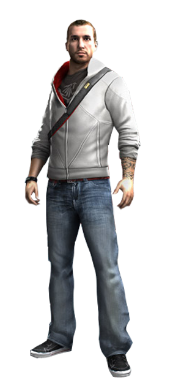
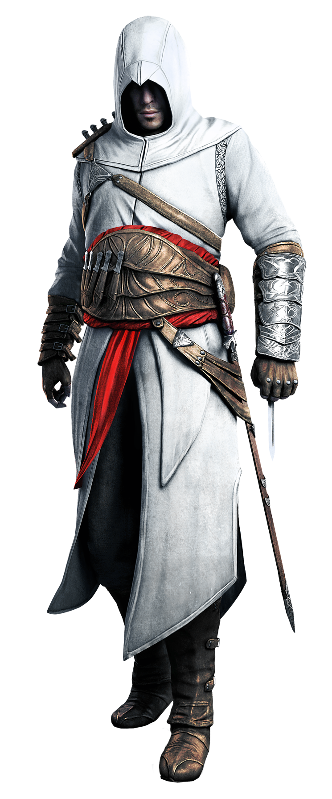
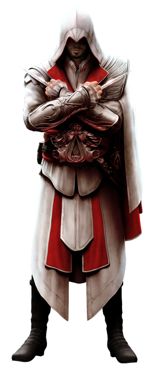
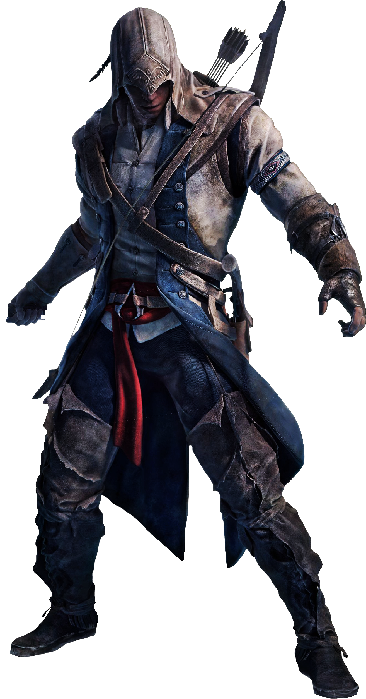

|  |
Desmond Miles E' il vero personaggio principale di Assassin's Creed, Assassin's Creed II, Assassin's Creed: Brotherhood,
Assassin's Creed: Revelations e Assassin's Creed III. A sua insaputa, era il discendente di un vasto numero di membri storici
della Confraternita degli Assassini. Tra i suoi antenati troviamo l'assassino gallo-romano Aquilus, l'assassino siriano del
dodicesimo secolo Altaìr Ibn-La'Ahad, il nobile rinascimentale italiano Ezio Auditore, il templare Haytham Kenway, il pirata
Edward Kenway e il primo assassino nativo americano, Ratohnhake:ton. |
|  |
Altaìr Ibn-La'Ahad fu uno dei più grandi Mentori dell'Ordine degli Assassini. Cresciuto per diventare un Assassino dalla
nascita, Altaìr ottenne il rango di Maestro Assassino a soli venticinque anni. Tuttavia, dopo il suo fallimento all'
ottenimento della Mela dell'Eden custodita nel Tempio di Salomone, all'inizio del 1191 fu declassato al rango di novizio
e inviato alla ricerca di redenzione. Con il compito di uccidere nove persone, che, a sua insaputa, componevano i ranghi
dell'Ordine dei Templari in Terra Santa, Altaìr iniziò una missione per il regno. Completata la sua missione di uccidere i
nove bersagli, e liberato l'Ordine da Al Mualim, che
aveva tradito gli Assassini. Il suo nome continuerà ad essere ricordato nell'Ordine, influenzando
notevolmente la vita dei suoi discendenti. La sua discendenza contiene una figura importante all'interno dell'Ordine degli
Assassini: Desmond Miles.
|
|  |
Ezio Auditore da Firenze fu un nobile fiorentino che divenne uno dei più grandi Mentori dell'Ordine degli Assassini.
Ezio non era a conoscenza della sua eredità di Assassino fino a 17 anni, quando il padre e i due fratelli, vennero uccisi.
Ezio fuggì da Firenze e si rifugiò a Villa Auditore, nel borgo di Monteriggioni. Dopo la morte
dello zio per mano di Cesare Borgia, Ezio liberò Roma dal controllo dei Borgia. Pochi anni dopo, trovò una lettera
del padre riguardante una Biblioteca nascosta a Masyaf, in cui ci sarebbe dovuta essere una saggezza inestimabile per
gli Assassini. Arrivato alla fortezza, scopre che è controllata dai Templari, e, dopo essere fuggito, viaggia verso
Costantinopoli, dove inizia la ricerca delle cinque Chiavi necessarie per aprire la Biblioteca. |
|  |
Ratonhnhake:ton comunemente conosciuto come Connor Kenway, è il personaggio principale
di Assassin's Creed III. Membro della tribù dei Kanien'kehe:ka, è uno degli antenati di William e Desmond Miles.
Nel 1760, quando era ancora molto
piccolo, il suo villaggio venne dato alle fiamme e vide morire la madre. Diversi anni dopo, guidato dalla visione di
uno spirito, Ratonhnhake:ton si unì all'Ordine degli Assassini. Con l'obiettivo di vendicarsi dei responsabili della
distruzione del suo villaggio e della morte della madre, Ratonhnhake:ton dedicò la sua vita a dare la caccia ai più
importanti Templari dell'epoca. è anche un rivoluzionario, conoscente di George Washington e Benjamin Franklin. |
 |
Edward KenwayE' stato un corsaro inglese, successivamente un pirata ed un membro dell'Ordine degli Assassini.
Entrato a far parte della British Royal Navy quando era ancora molto giovane, fu di stanza nei Caraibi. Tuttavia, la sete di
oro, gloria e fama lo portarono a diventare un pirata; fu durante questo periodo della sua vita che entrò in contatto con l'Ordine
degli Assassini, di cui abbracciò gli ideali. Edward è stato inoltre il padre di Haytham Kenway, il nonno di Ratonhnhake:ton
e un antenato di William e Desmond Miles. |